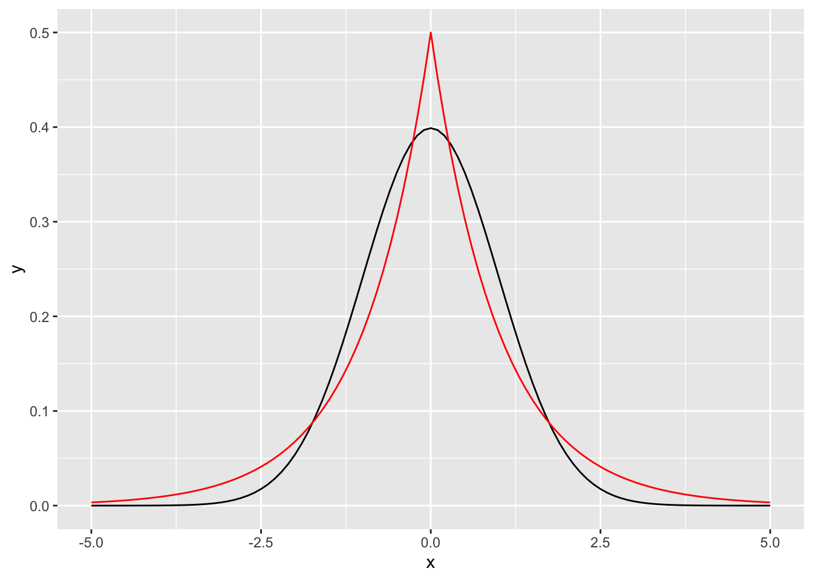

データ \[ \mathbf{X} = \left[ X_1, \cdots, X_D \right] \]
因果マルコフ条件と忠実性の仮定より、DAG \(G\)によって定義された確率的グラフィカルモデルとして、データをモデル化する \[ \begin{align} p&(X_1, \cdots, X_D) \\ = &\prod_{i=1}^D p_b(X_i | Pa(X_i))^{z_i} p_c(X_i|PA(X_i))^{(1-z_i)} \end{align} \]
連続変数とその親変数との関係は以下の線形方程式 \[ X_i = \boldsymbol \beta ^T X_{-i} + \epsilon_i, \quad \epsilon_i \sim Laplace(0,b_i) \]
離散変数とその親変数との関係は以下の線形方程式 \[ X_i = \left\{ \begin{array}{l} 1 \quad \boldsymbol \beta ^T X_{-i} + \epsilon_i > 0 , \quad \epsilon_i \sim Logistic(0,1)\\ 0 \quad \text{otherwise} \end{array} \right. \]
上記の仮定をモデル式に代入すると…
\[ \begin{align} p&(X_1, \cdots, X_D) \\ &= \prod_{i=1}^D \prod_{n=1}^N \exp(\boldsymbol \beta_i^T X_{-i,n} x_{in}z_i) (1 + \exp(\boldsymbol \beta_i^T X_{-i,n}))^{-z_i(1- x_{in})} \\ & \qquad \prod_{n=1}^N b_i^{z_i-1} \exp\left(-\frac{|x_{in} - \boldsymbol \beta_i^T X_{-i,n}| \cdot (1-z_i)}{b_i} \right) \end{align} \]
\[ f(x; \mu, s) = \frac{\exp(-(x - \mu) / s)}{s(1 + \exp(-(x - \mu)/ s)) ^2} \]
d <- data.frame(x = c(-5,5))
library(ggplot2)
ggplot(data = d, mapping = aes(x = x)) +
stat_function(fun = dnorm) +
stat_function(fun = dlogis, color = "red") +
ylim(0, 0.5)\[ f(x; \mu, b) = \frac{1}{2b} \exp\left( \frac{|x-\mu|}{b} \right) \]
library(rmutil)
d <- data.frame(x = c(-5,5))
ggplot(data = d, mapping = aes(x = x)) +
stat_function(fun = dnorm) +
stat_function(fun = dlaplace, color = "red")
\(\mathcal F = \{ f| f : \mathbb R^2 \rightarrow \mathbb R\}\) を関数の集合とする。
\(\mathcal P_{\mathbb U} = \{ \mathcal P_{\mathbb R}, \mathcal P_{\{ 0, 1\}} \}\)で、連続/離散確率変数の確率分布の集合を表す。
以下が成り立つとき、関数\(f \in \mathcal F\)と、\(\mathbf X\)の分布と、誤差\(\varepsilon\)を含む 集合\(\mathcal B \subseteq \mathcal F \times \mathcal P_{\mathbb U} \times \mathcal P_{\mathbb U}\)は、\(\mathcal F\) において2変数識別可能であると言う。
\[\begin{align} (&f, P_X, P_{\varepsilon_Y}) \in \mathcal B \quad \textit{and} \quad Y = f(X, \varepsilon_Y), X \mathop{\,\perp\!\!\!\!\!\perp\,}\varepsilon_Y \\ &\Longrightarrow \nexists (g, P_Y, P_{\varepsilon_Y}) \in \mathcal B \quad \textit{and} \quad X = g(Y, \varepsilon_Y), Y \mathop{\,\perp\!\!\!\!\!\perp\,}\varepsilon_X \end{align}\]
更に加えて、
\[ f(X, \varepsilon_Y) \mathop{\,\perp\!\!\!\!\!/\!\!\!\!\!\perp\,}X \quad \textit{for all} \quad (f, P_X, P_{\varepsilon_Y}) \in \mathcal B \quad \textit{with} \quad X \mathop{\,\perp\!\!\!\!\!\perp\,}\varepsilon_Y \]
上記のmixed causal modelにおいて、\(\mathcal P_{\mathbb U}\)は非ガウス分布の集合。
このモデルは、2変数識別可能である
概要
証明(両方とも離散変数の場合)
(背理法) mixed causal modelが2変数識別可能でないとしたら、モデルの定義と識別可能性の定義より、 同時分布が等しい以下の2つのモデルが存在する
\[\begin{align} \mathcal{M}_1 = \{&Y=f_b(X, \varepsilon_Y) = \left\{ \begin{array}{l} 1 \quad \beta_1 X + \varepsilon_Y > 0\\ 0 \quad \text{otherwise} \end{array} , \right. \\ &P_X(X=1)=k_1, \\ &P_{\varepsilon_Y} = logistic(0,1) \} \\ \end{align}\]
\[\begin{align} \mathcal{M}_2 = \{&X=f_b(Y, \varepsilon_X) = \left\{ \begin{array}{l} 1 \quad \beta_2 Y + \varepsilon_X > 0\\ 0 \quad \text{otherwise} \end{array} , \right. \\ &P_X(X=1)=k_2, \\ &P_{\varepsilon_X} = logistic(0,1) \} \end{align}\]
これら2つのモデルは同じ同時分布を持つ。
ここで、それぞれの同時分布について考える。
\[\begin{align} P_{\mathcal M_1}(X,Y) &= P_X(X)P_{\varepsilon_Y}(Y|X) \\ &= k_1^X(1-k_1)^{1-X} \left( \frac{1}{1+\exp(-\beta_1 X)} \right)^Y \left( 1 - \frac{1}{1+\exp(-\beta_1 X)} \right)^{1-Y} \end{align}\]
\[\begin{align} P_{\mathcal M_2}(X,Y) &= P_Y(Y)P_{\varepsilon_X}(X|Y) \\ &= k_1^Y(1-k_2)^{1-Y} \left( \frac{1}{1+\exp(-\beta_2 Y)} \right)^X \left( 1 - \frac{1}{1+\exp(-\beta_2 Y)} \right)^{1-X} \end{align}\]
ここで、\(P_{\mathcal M_1}(X,Y) = P_{\mathcal M_2}(X,Y)\)が成立しているとしたら、 \(\frac{P_{\mathcal M_1}(X=0,Y=0)}{P_{\mathcal M_2}(X=0,Y=0)} = 1\)となり、\(k_1 = k_2\)も成立していることになる。
これは、\(X\)と\(Y\)の周辺分布が異なるという仮定と矛盾する。
証明2(Xが連続、Yが離散の場合)
(背理法) mixed causal modelが2変数識別可能でないとしたら、モデルの定義と識別可能性の定義より、 同時分布が等しい以下の2つのモデルが存在する
\[\begin{align} \mathcal{M}_1 = \{&Y = \left\{ \begin{array}{l} 1 \quad \beta_1 X + \varepsilon_Y > 0\\ 0 \quad \text{otherwise} \end{array} , \right. \\ &P_{\varepsilon_Y} = logistic(0,1) \} \end{align}\]
\[\begin{align} \mathcal{M}_2 = \{ &X= \beta_2 Y + \varepsilon_X, \\ &P_{\varepsilon_X} = Laplace(0,b) \} \end{align}\]
しかし、モデル\(\mathcal M_1\)では、 \(P(Y=1|X=x)=P_{\varepsilon_Y}(\varepsilon_Y > -\beta_1X)\)かつ \(P_{\varepsilon_XY} = logistic(0,1)\)なので、
\[\begin{align} \lim_{x \to +\infty} P(Y=1|X=x) = \left \{ \begin{array}{l} 1, \quad \text{if} \quad \beta_1 > 0 \\ 0, \quad \text{if} \quad \beta_1 < 0 \end{array} \quad , \right. \end{align}\]
\[\begin{align} \lim_{x \to -\infty} P(Y=1|X=x) = \left \{ \begin{array}{l} 0, \quad \text{if} \quad \beta_1 > 0 \\ 1, \quad \text{if} \quad \beta_1 < 0 \end{array} \quad , \right. \end{align}\]
一方で、モデル\(\mathcal M_2\)では、 \(P_{\varepsilon_X} = Laplace(0,b)\)であり、
\[\begin{align} P(Y=1|X=x) &= \frac{P(Y=1, X=x)}{P_X(X=x)} \\ &= \frac{P_Y(Y=1) P_{\varepsilon_X}(X=x|Y=1)} {P_Y(Y=0)P_{\varepsilon_X}(X=x|Y=0) + P_Y(Y=1)P_{\varepsilon_X}(X=x|Y=1)} \end{align}\]
より、
\[ \lim_{x \to \pm \infty} P(Y=1|X=x) = P_Y(Y=1) \]
よって、\(\mathcal M_1\)と\(\mathcal M_2\)とで分布が異なる。
上記と同じ調子でやったら、Li and Shimizu(2018) の2変数識別可能性も証明できそう…？
スコアベースの手法でDAGを推定する
Mixed Information criterion (MIC)を提案
\[ \begin{align} MIC(G) &= \sum_{i=1}^D MIC(X_i, Pa(X_i)) \\ &= \sum_{i=1}^D \left( \frac{1}{w_i} LL(X_i|Pa(X_i)) + Pen(X_i, Pa(X_i)) \right) \end{align} \]
\[ Pa_c(X_i) = \text{arg min}_{X' \subseteq X_{-i}} LL(X_i|X') \\ w_i = LL(X_i|Pa_c(X_i)) \]
モデル選択基準を最適化することで、 データ生成分布を表現できるグラフが選択され、 データ生成分布を表現するために冗長な辺を含まないグラフになること
これをMICが満たしていると、MIC最小のモデルを選択すれば良いということ
定義(Local Consistency)
データ\(\mathbf{X}\)が、確率分布\(p(\cdot)\)から得られた\(N\)個の\(iid\)サンプルだとする。
\(\mathcal G\)を任意のDAG、\(\mathcal G'\)を\(X_i \rightarrow X_j\)という矢線を加えたDAGだとする。
このとき、スコア規準\(S(\mathcal G, \mathbf X)\)が、Local Consistentとは、以下を満たすこと
定理
MICはLocal consistentである
証明
まだ追えてない…。
けど、やっぱり証明を見ると、不等号反対な気がする？